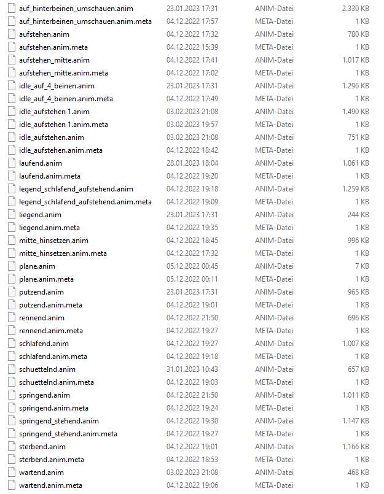
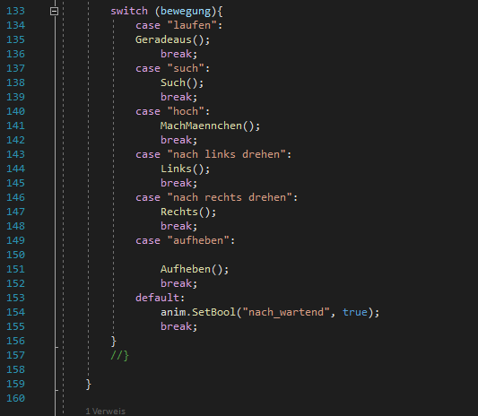
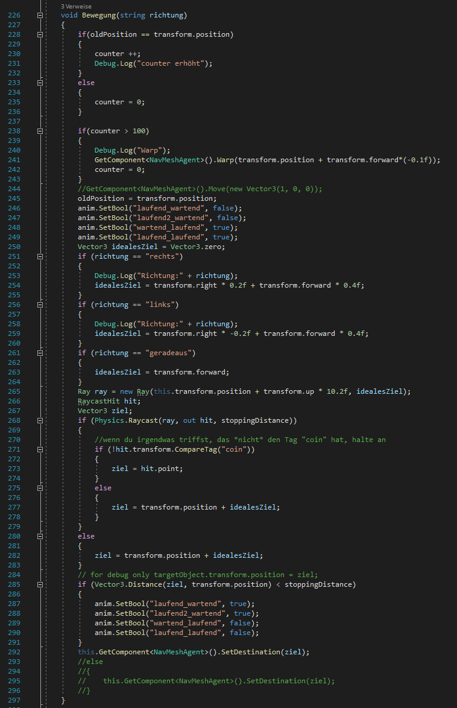
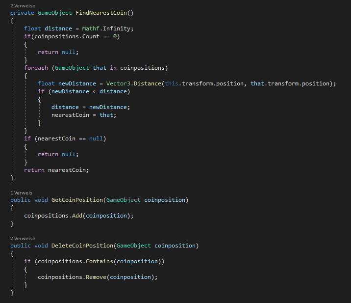

Woche 10
Gepostet am 25. Januar 2023 (Zuletzt geändert am 27. März 2023 )
3 Minuten • 534 Wörter
Dank der Vorlesung ist mir nun bewusst: Haptisches Feedback in VR wird in die Bereiche activ haptics, passive haptics und pseudo haptics aufgesplittet. Zusätzlich wurden die Themen Tracking Devices und Interaction Techniques erneut aufgegriffen.
Für mein Projekt musste zuerst noch eine passende Ratte gefunden werden. Hierbei wurde der Fokus darauf gelegt, diese Ratte nicht noch animieren, bzw. riggen zu müssen. Nach längerer Recherche fand sich folgende Ratte:
Animierte Ratte auf renderhub.com
Das tollste: Sie kam direkt mit Animationen und war komplett gerigged. Ein Nachteil der Animationen war allerdings, dass die Ratte diese Animationen nicht auf der Stelle macht, sondern sich das Model tatsächlich bewegt, also die Position in Unity verändert wird. Hierauf musste geachtet werden, sobald es an die Bewegung der Ratte in VR ging.
Einen Tag später waren dann auch alle Animationen geschnitten und passend benannt.

Der nächste Schritt war, die Ratte “auf Befehle horchen zu lassen”. Sofern der GestureDetector die Handposition für “Laufen” erkennt sollte also die Animation für “Laufen” abgespielt werden. Das gleiche gilt für “Mach Männchen”, “Aufheben”, “Links drehen”, “Rechts drehen”, “Such”.
- "Laufen" bewegte die Ratte nach vorne, bis die Handpose geändert wurde.
- "nach Links drehen" lässt die Ratte einen Bogen nach links laufen.
- "nach Rechts drehen" macht das selbe nach rechts.
- "Such" lässt die Ratte nach der nächsten Münze suchen und, falls eine in der Nähe ist, zu dieser laufen.
- "Mach Männchen" lässt sie auf die Hinterbeine gehen und diese Münze aufheben.
- "Aufheben" wird lediglich für die Interaction Tasks benötigt. Damit wird dann das T aufgehoben und mit der Drehung der Hand in die richtige Position gedreht.

Laufen, sowie links und rechts drehen waren recht schnell implementiert. Zu diesem Zeitpunkt war alles noch mit einem if-else modelliert, dies wurde später allerdings in ein switch-case geändert, um die Übersichtlichkeit zu wahren. Alle drei Befehle rufen die gleiche Funktion auf, mit dem einzigen Unterschied, dass eine Rotationsvariable verändert übergeben wird.

“Such” wurde mit Hilfe von weiteren Collidern, welche sich an den Münzen befinden, umgesetzt. Sofern die Ratte mit ihrem Collider die Münze und deren Collider trifft, wird die Münze in die Liste coinpositions hinzugefügt.

Die Funktion “findNearestCoin” kontrolliert dann, ob in der Liste eine Münze existiert und gibt die Position der Münze mit der kürzesten Distanz zur Ratte zurück. Dieser Rückgabewert ist dann die Position an die die Ratte bewegt wird. “Mach Männchen” setzt die Münze dann auf inaktiv und zählt den Counter hoch. “Aufheben” sollte ein komplexeres Thema werden und wurde zuerst einmal auf der ToDo Liste weiter nach unten gesetzt.

Da das Spiel ja als Lernspiel gedacht war, wurde die spontane Idee, die Münzen durch Käse zu ersetzen umgesetzt und erweitert. Die Münzen wurden also alle in Käsestücke umgewandelt und an Stelle der Münzen befinden sich nun Textboxen mit Rattenfakten. Diese tauchen auf, sobald der dazugehörige Käse “gegessen” wurde. Um anschließend die Tipps im Spiel wiederfinden zu können wurden aus den Käsestücke Käseleiber. Sobald die Ratte den Käseleib “gefressen” hatte wurde er ausgeblendet und stattdessen ein Käsestück eingeblendet. Damit wurde nach dem Belohnungsprinzip gearbeitet und die Teilnehmer*innen, bzw. Spieler*innen werden mit Fakten “belohnt”, wenn sie die Ratte dazu bringen den Käse zu essen.